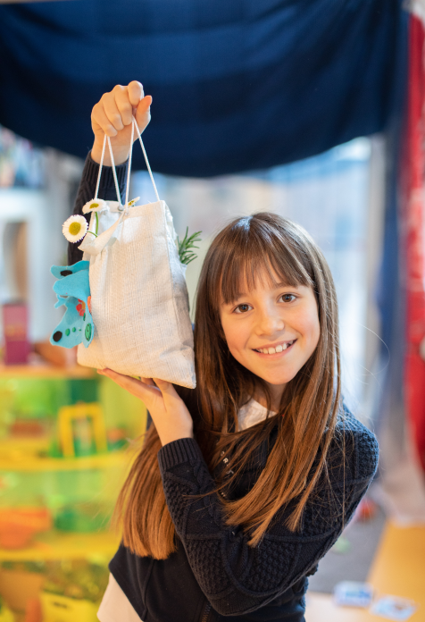

Votre potager au fil des saisons

Comment ça marche?
Dans votre école nous vous accompagnons dans la création, l’exploration et l’entretien de votre potager.
En intérieur et en extérieur, les enfants cultivent dans des sacs : des fruits, des légumes, des aromates et des fleurs comestibles au fil des saisons